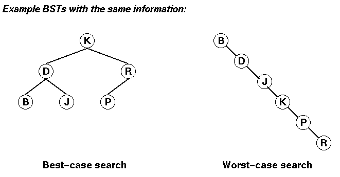
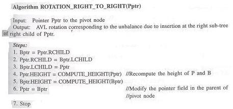
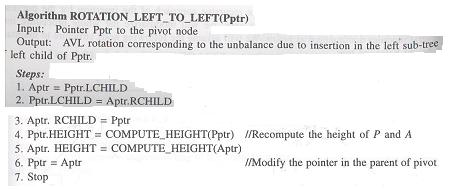
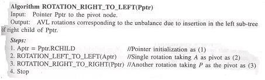
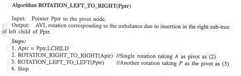
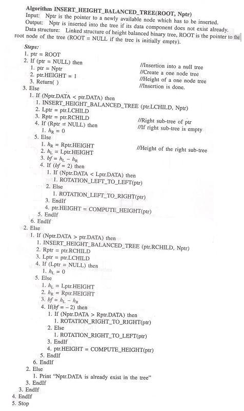
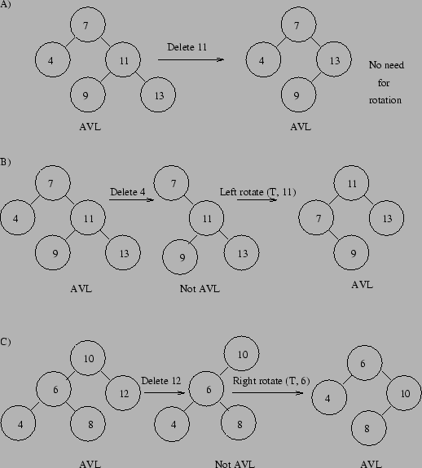
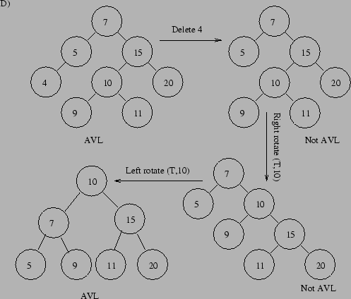

From our study of Binary trees, we know that the average and maximum search times will be minimised, if the BST is maintained as a complete tree at all times.
In the best-case, the search time is O(log N).
If the tree gets out of balance - its search performance deteriorates.
In the worst-case, the search time degrades to O(N).

Idea!:
Keep the BST as completely balanced as possible by rebalancing it each time a new key is inserted.
Example BST rebalancing algorithms:
Problem with Idea:
The cost of rebalancing with both of these algorithms can take O(N) operations (global tree rebalancing).
So, we have:
Question:
Is there some way of achieving O(log N) search times while also achieving O(log N) insertion times?
Answer:
Yes!
The idea is to try and define a class of BSTs that are almost balanced and use a local tree balancing technique.
In this case, it can be shown that we can have both O(log N) search and insertion times.
A classical method to do this is to use a AVL (Adelson-Velskii and Landis) tree.
An AVL tree is a binary search tree in which the height of the left and right subtrees of every node differ by at most one - referred to as "height-balanced".
Example AVL trees:
3 6 5
/ \ / \ / \
2 5 4 7 2 9
/ / \ / \
3 1 4 7 12
/ \ / \
3 8 11 14
/
10
Example non-AVL trees:
5 6 5
/ / \ / \
3 3 10 2 9
/ / \ / / \ / \
2 1 4 7 1 4 7 12
\ / / \
8 3 11 14
/
10
In order to indicate the differences between the heights of the left and right subtrees of a given node, balance factor is defined for each node.
BF = (height of right subtree - height of left subtree)
So, BF = -1, 0 or +1 for an AVL tree.
Balance factors for the above AVL trees (node key values not shown):
0 -1 +1
/ \ / \ / \
0 0 -1 0 -1 -1
/ / / \
0 0 +1 0
\
0
Balance factors for the above non-AVL tree (node key values not shown):
+1
/ \
-1 -2
/ /
0 +1
\
0
When the AVL property is lost we can rebalance the tree via one of four rotations:
A is the node that the rotation is performed on. This rotation is performed when A is unbalanced to the left (the left subtree is 2 higher than the right subtree) and B is left-heavy (the left subtree of B is 1 higher than the right subtree of B). T1, T2 and T3 represent subtrees (a node was added to T1 which made B leftheavy and unbalanced A).
A SRR at A B
/ \ ----------> / \
B T3 T1 A
/ \ / \
T1 T2 T2 T3

A is the node that the rotation is performed on. This rotation is performed when A is unbalanced to the right (the right subtree is 2 higher than the left subtree) and B is right-heavy (the right subtree of B is 1 higher than the left subtree of B). T1, T2 and T3 represent subtrees (a node was added to T3 which made B right-heavy and unbalanced A).
A SLR at A B
/ \ ----------> / \
T1 B A T3
/ \ / \
T2 T3 T1 T2

Double Left Rotation (DLR):
C is the node that the rotation is performed on. This rotation is performed when C is unbalanced to the left (the left subtree is 2 higher than the right subtree), A is right-heavy (the right subtree of A is 1 higher than the left subtree of A) and B is left-heavy. T1, T2, T3, and T4 represent subtrees (a node was added to T2 which made B left-heavy, made A right-heavy and unbalanced C). This consists of a single left rotation at node A, followed by a single right at node C.
C SLR at A C SRR at C B
/ \ ----------> / \ ---------> / \
A T4 B T4 A C
/ \ / \ / \ / \
T1 B A T3 T1 T2 T3 T4
/ \ / \
T2 T3 T1 T2
That is,
DLR equiv SLR + SRR

A is the node that the rotation is performed on. This rotation is performed when A is unbalanced to the right (the right subtree is 2 higher than the left subtree), C is leftheavy (the left subtree of C is 1 higher than the right subtree of C) and B is right-heavy. T1, T2, T3, and T4 represent subtrees (a node was added to T3 which made B right-heavy, made C left-heavy and unbalanced A). This consists of a single right at node C, followed by a single left at node A.
A SRR at C A SLR at A B
/ \ ----------> / \ ----------> / \
T1 C T1 B A C
/ \ / \ / \ / \
B T4 T2 C T1 T2 T3 T4
/ \ / \
T2 T3 T3 T4
That is,
DRR equiv SRR + SLR

Insertion in a AVL-tree

In each case the tree is rebalanced locally (since there is no need to modify the balance factors higher in the tree).
Since rebalancing is local, insertion requires one single or one double
rotation, ie O(constant) for rebalancing.
Of course, there is still the cost of search for insertion (see below).
Experiments have shown that 53% of insertions do not bring the tree out of balance.
Deletion in a AVL-tree Deletion of keys follows in a similar fashion requiring either a left rotation, a right rotation or a combination of both in order to reinstate the AVL property.Various examples of deletion and subsequent rotations follow for illustration.


----------------------------------------------------------------------------------------------------In addition to the two cases pictured below, there are the two dual (i.e., symmetric) cases where the deletion has occurred in the left subtree below k1.

It can be shown that deletion requires O(log N) rotations in the
worst-case.
However, experiments show that 78% of deletions do not require
rebalancing.
Performance for Searching in an AVL tree
We can show that the maximum number of comparisons in an optimum shaped tree is:
C > 2 ceiling[log(N + 1)] + 1
The number of comparisons for a worst-case AVL tree is obtained by evaluating an AVL tree with the greatest possible height and minimum number of nodes.
This type of AVL tree is called a Fibonacci AVL trees.
The maximum number of comparisons in the deepest possible Fibonacci AVL tree is
C' = 2h + 1 < 2.88*log(N + 2) - 1.66That is, AVL searches can require no more than about 44% more comparisons than required in the most costly search of an optimum shaped AVL tree!
Also, much better than the O(N) worst-case result for a normal (non-AVL) binary search tree!
Non-recursive algorithm for AVL tree insertion -- http://cgi.cse.unsw.edu.au/~neilb/me/01100825323
Non-recursive algorithm for AVL tree deletion -- http://cgi.cse.unsw.edu.au/~neilb/me/01101186893
Other Types of Balanced Search Trees
We have seen that AVL trees gives good performance (search, insertion and deletion) - with the (slight) compromise of not achieving perfect balance.
However, there are two problems with AVL trees:
To address the first problem, the red-black tree is used.
To address the second problem, multi-way trees are used.
----------------------------------------------------------------------------------------------------------------References: deletion -- http://mgmt.iisc.ernet.in/~raghavan/mis/chap6/chap6.html deletion -- http://math.ucsd.edu/~sbuss/CourseWeb/Math176_2000F/Topics/AvlDelete.html http://cairns.cs.jcu.edu.au/teaching/Subjects/cp2001/1998/LectureNotes/BalancedTrees/index.html http://cairns.cs.jcu.edu.au/teaching/Subjects/cp2001/1998/LectureNotes/